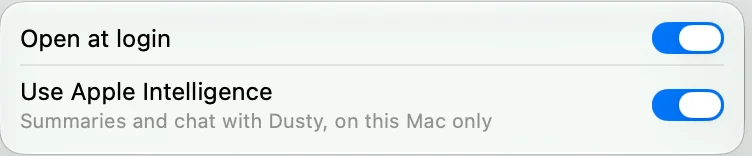
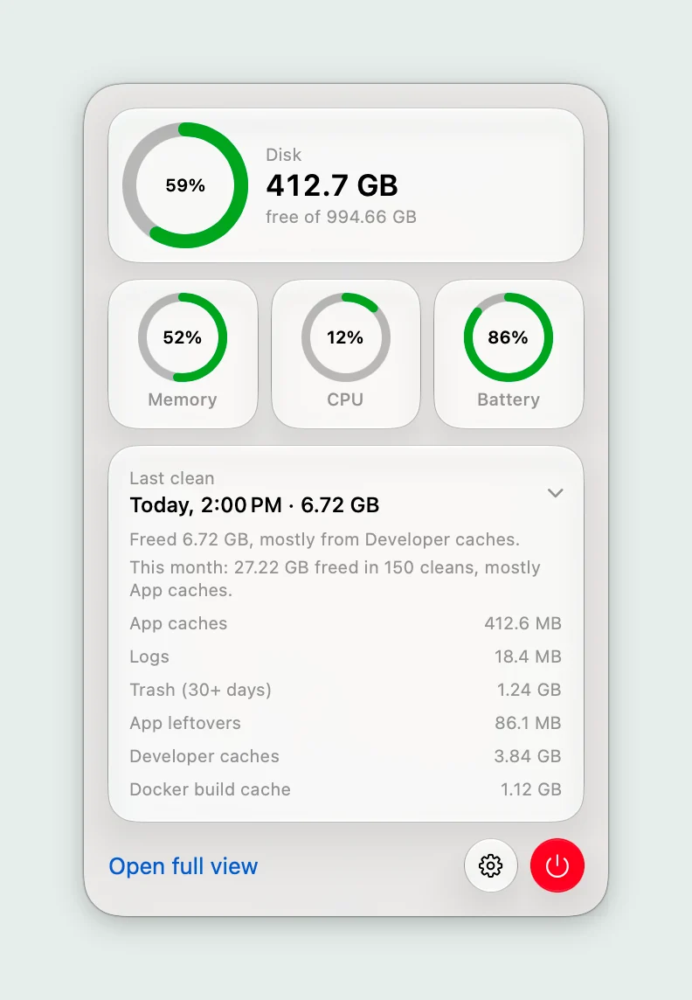

Fair questions.
It deletes files by itself, so you should ask. These are the straight answers.
Cleaning

What does Lightly clean?
App caches, logs older than 7 days, Trash items older than 30 days, leftovers from apps gone for 30 days, weekly developer caches, and Docker’s build cache and dangling images. The full rules are on one page.
How often does it clean?
Every hour by default. You can pick every 3, 6 or 12 hours, or once a day, in Settings.
When does the first clean happen?
One full interval after the first launch, so an hour by default. Nothing is cleaned the moment you open it.
What if my Mac was asleep?
The clean runs at the next wake.
Can I clean right now?
Yes. Open the full view and press Clean now. It also runs the weekly developer caches.
Can I pause it?
Yes. Turn off Clean automatically in Settings, or press Pause auto-clean in the full view. When you resume, the timer starts again instead of cleaning at once.
Will cleaning caches slow my apps?
An app may take a little longer the first time it opens after a clean, while it rebuilds its cache. Apps that are open are skipped.
How much space will I get back?
It depends on your Mac and your apps, so there is no promised figure. Lightly shows the real number after every clean, and a total for the month.
Safety

Can I undo a clean?
Mostly no. Cleaning is permanent and needs no confirmation. App leftovers are the exception: they go to the Trash first, so you have time to take them back.
What does it never touch?
External drives, system folders, Documents, Desktop, Downloads, Pictures, Movies, Music, Mail, Messages, iCloud Drive, keychains, app containers, and the profiles of Safari, Chrome, Firefox, Brave, Edge, Arc and Opera.
Can I protect a folder?
Yes. Add any file or folder to Always kept in Settings. No clean enters it, whatever the other rules say.
Can I see what a clean would remove first?
Yes, if you build from source. That build is a dry run: it lists what a clean would remove and deletes nothing. The commands are on the safety page.
Does it need my admin password?
No, never. It works only inside your own user folders.
Why does it want Full Disk Access?
Only to clean the Trash, which macOS protects. Without it, Lightly skips the Trash and everything else works.
Privacy and Dusty

Does anything leave my Mac?
No. Lightly has no network code, no account and no analytics. The only web link in the app is View on GitHub in Settings.
What is Dusty?
An assistant in the full view that describes each clean and answers questions about your Mac. It runs on Apple Intelligence, on the Mac itself.
Can Dusty delete things?
No. Dusty has no tools and cannot decide what gets deleted. It only rewords measured facts, and its answers are checked against them.
Is my chat saved?
No. It stays in memory until you quit Lightly.
What if my Mac has no Apple Intelligence?
Dusty is hidden. Cleaning, the rings and the history all work the same.
Installing

Which Macs does it run on?
macOS 27 on Apple Silicon.
Why does macOS warn me when I open it?
This build is not notarized by Apple. Go to System Settings, Privacy & Security, and choose Open Anyway.
Is it really free?
Yes. It is open source under the MIT license. If it saves you some space, you can buy the author a coffee.
Where do I put the app?
In /Applications, before you first open it. The login item stays tied to where the app first ran.
How do I remove it?
Turn off Open at login, quit from the menu bar window, and delete Lightly.app. Its settings and history are in ~/Library/Application Support/com.maccleaner.app.